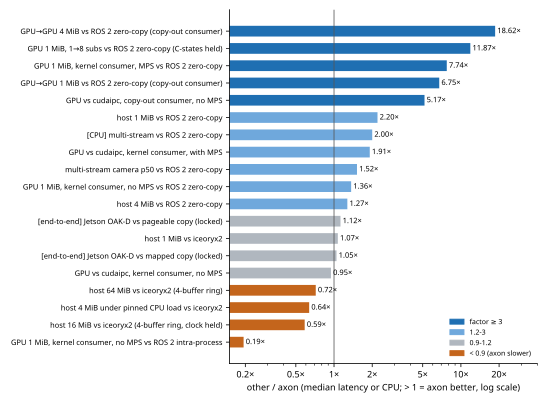
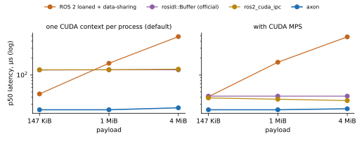
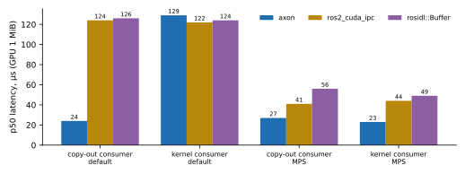
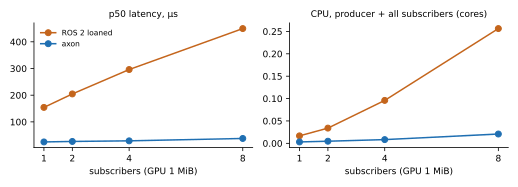
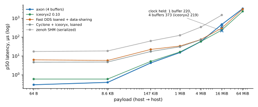
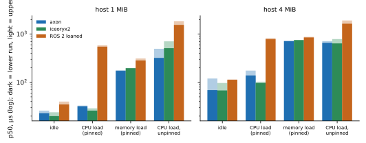
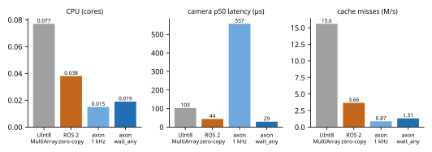
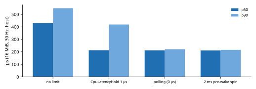
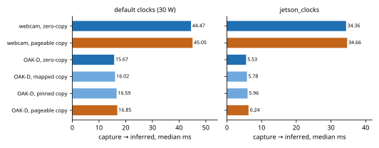
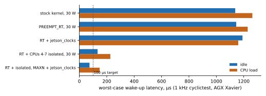

NvBufSurface). Over five weeks we compared it, in C++ and on the same machines, with ROS 2's
own zero-copy path (loaned messages + Fast DDS data-sharing), with the GPU-sharing ROS 2 transports
(the official rosidl::Buffer CUDA backend and ros2_cuda_ipc), with iceoryx2, Cyclone DDS +
iceoryx and zenoh, and, on a Jetson, with a conventional camera → inference copy pipeline. This paper
collects every comparison and grades each possible claim. The large, defensible win is GPU data
between processes: 7-19× lower latency than ROS 2's zero-copy path at 1-4 MiB, flat at 24-26 µs
for any size, and 12× less CPU with eight subscribers. Against transports that also keep data on the
GPU, the lead depends on CUDA MPS and on what the consumer does: about 2× with MPS, none without it
for a consumer that launches kernels. On the host, axon is as fast as iceoryx2 (and 1.3-2.2×
faster than ROS 2's zero-copy path at 1-4 MiB), but slower at 16 MiB and above with its default
4-buffer ring. On a Jetson with a real camera the camera-buffer zero-copy path saves 0.2-0.9 ms per
frame against a pageable copy, and 0.1-0.35 ms against a well-built mapped copy.

axon is a C++20 library with Python bindings. A producer owns a pool of buffers, writes a frame into
one of them and publishes a fixed-size descriptor (shape, dtype, pitch, timestamps, a sequence
number); consumers read the latest frame as a view of the same memory, guarded by a seqlock. Pool file
descriptors cross the process boundary once, over a UNIX socket sidecar (SCM_RIGHTS);
after that, publishing is a store and a wake-up. Pools can hold host memory (memfd), CUDA VMM
allocations exported as file descriptors, or Jetson NvBufSurface dma-bufs that a V4L2
camera writes into.
| Test bed | What ran there |
|---|---|
| Workstation: AMD Ryzen 7 9800X3D, RTX 5080, Ubuntu 24.04, kernels 6.8 / 7.0, ROS 2 Jazzy (Fast DDS 2.14, Cyclone, zenoh), ROS 2 Lyrical in Docker, iceoryx2 0.10 | All host and GPU transport comparisons (§3-§5, §8.1). Some runs had CPUs 2-4 and 10-12 offline because of a hardware fault; every table in the repository states the core layout. |
| Jetson AGX Xavier, JetPack 5.1.6 (L4T r35.6), stock and PREEMPT_RT kernels; Logitech Webcam Pro 9000 (USB 2.0) and Luxonis OAK-D Pro W (USB 3, UVC mode) | Camera → CUDA zero-copy, camera → TensorRT end to end (§7), 1 kHz RT jitter (§8.2). |
Rules we held ourselves to. C++ on both sides (an early Python comparison inflated the gaps and is retired, §9). ROS 2's zero-copy path configured as intended: loaned messages with a Fast DDS data-sharing XML profile (the default profile silently copies large messages), verified by its shared-memory segments; the GPU backends verified by their reported backend type. The same machine, payloads and rates for every transport in a table, medians of two or three runs, runs gated against foreign GPU or CPU load. Where a result depended on a machine setting (CPU idle states, the producer's clock, CUDA MPS), we measured it both ways and report both. Two claims were retracted after review when a control experiment refuted them; they are listed in §9.
Each result is graded:
STRONG large and robust to the conditions we varied;
CONDITIONAL real but dependent on a stated condition or small in absolute terms;
PARITY no meaningful difference;
NOT A WIN axon is slower or the transport is not what decides the number.
Latencies are medians (p50) of publish-to-consumer-ready unless stated; "ROS 2 zero-copy" means loaned
messages with Fast DDS data-sharing. Full tables, raw data and scripts are in
benchmarks/ros2_cpp/, instrumentation/ and docs/hardware-verification.md.
A ROS 2 message lives in host memory, so a GPU tensor goes device → host before the transport and host → device after it, even when the transport itself is zero-copy. axon hands the consumer the device allocation itself. The result is flat in payload size:
| GPU → GPU, p50 µs | 147 KiB | 1 MiB | 4 MiB |
|---|---|---|---|
| ROS 2 loaned + data-sharing | 46 | 162 | 484 |
| axon | 24 | 24 | 26 |
| ratio | 1.9× | 6.8× | 18.6× |
benchmarks/ros2_cpp/README.md, "GPU → GPU against the other GPU zero-copy
transports" (default CUDA contexts; with MPS the ROS 2 column is 41 / 169 / 479 µs).
The official ROS 2 rosidl::Buffer CUDA backend (Lyrical) and ros2_cuda_ipc also pass a
GPU allocation by reference. Their extra cost without MPS, about 100 µs, is mostly not the descriptor (24-32 µs) but, most likely,
the switch between the two processes' CUDA contexts when the consumer waits on the producer's work
(MPS, which shares one context, cuts it to about 6 µs). axon's
handoff avoids that wait for a consumer that copies results out, but a consumer that launches its own
kernel on the frame pays the same context switch with axon too:

benchmarks/ros2_cpp/README.md, "When the consumer runs a kernel".So: 5.2× lower latency without MPS for a copy-out consumer (24 vs 124-126 µs); 1.5-2.1× with MPS for either consumer (23-27 vs 41-56 µs); and no lead without MPS for a kernel consumer (129 vs 122-124 µs). A deployment that runs several GPU processes should enable MPS whichever transport it uses; axon's lead then is about 2×.

benchmarks/ros2_cpp/README.md, "1 → N fan-out" (deep C-states off).Every ROS 2 subscriber repeats the host → device copy; axon's subscribers share one device buffer. At eight subscribers axon's median is 37.9 µs against 449.7 µs (11.9×), and the producer and all subscribers together use 0.021 cores against 0.256 (12×). On the host the same fan-out costs both transports little: 1 MiB to eight subscribers is 19.0 vs 33.6 µs.

benchmarks/ros2_cpp/README.md, "Payload size, iceoryx2 and the other RMWs" (producer clock not
held); the crosses are the clock-held 16 MiB runs from the same file.On the host every zero-copy transport writes the payload once into shared memory, so the differences are fixed per-message costs. axon and iceoryx2 are within about 1 µs of each other up to 4 MiB (1 MiB: 15.4 vs 16.5 µs). ROS 2's zero-copy path adds about 18 µs per message (1 MiB: 33.9 µs, 2.2×; 4 MiB: 75.4 vs 59.2 µs, 1.3×); Cyclone + iceoryx is similar (30.9 µs), and zenoh with shared memory, which still serializes, is 125.5 µs. A claim of "faster than ROS 2 on the host" is true but small: a fixed ~20 µs, shrinking in relative terms as frames grow.
With its default ring of four buffers axon is the slowest zero-copy transport at 16 MiB: 373 µs against 219 µs for iceoryx2 with the producer's clock held (474 vs 238 µs without). The cost grows with ring depth (1 / 2 / 4 buffers: 220 / 230 / 373 µs) and with the DRAM traffic the ring causes; one buffer matches iceoryx2. Large host frames should use a shallow ring, and the default should change; until it does, this is a loss to report, not to hide.

benchmarks/ros2_cpp/README.md, "Tail latency under load (host)".Pinned to their own physical cores, axon and iceoryx2 keep their 1 MiB median under CPU load (32-33 and 26-29 µs), while ROS 2 loaned rises from 35-40 to 548-584 µs, for a reason this run does not show. Unpinned, with load on every CPU, every transport has a p90 of 3-5 ms and a p99 of 6-9 ms. The tail is decided by CPU placement and the scheduler, not by the transport, and p99 under load varies too much between runs to rank anyone.
Four cameras, a LiDAR, an IMU and odometry, scaled to 297 MB/s, every consumer event-driven:

benchmarks/ros2_cpp, multi-stream). Every transport delivered 100 % of the camera frames.Event-driven (wait_any), axon has the lowest camera latency (p50 29 vs 44 µs, p99 124 vs
235 µs) at half the CPU of ROS 2's zero-copy path (0.019 vs 0.038 cores) and 2.8× fewer cache misses.
All of these are small in absolute terms: in C++ every transport is cheap. A fixed 1 kHz polling loop
is cheaper still (0.015 cores) but makes a frame wait half a tick (557 µs).
Composing nodes into one process (intra-process unique_ptr or type adaptation) is ROS 2's
answer to copy costs. axon across two processes is not slower than that: 4-5.5 µs faster with a
spinning consumer against a spin_some loop (GPU 1 MiB: 24 vs 28 µs), 1.3-2 µs faster with
both consumers blocking. The claim is "process isolation without a latency penalty", not a speed-up.
At camera rates a producer core sits idle most of the time and the CPU lowers its clock. For a
16 MiB host frame at 30 Hz the median doubled (about 420 vs 210 µs) with nothing in the transport
changed. axon ships two tools for this, measured on the workstation: CpuLatencyHold
(a per-CPU wake-up latency limit; 1 µs fixes the median but leaves a p90 of 419 µs) and
rt_sleep_until_prewarmed (spin for 2 ms before a deadline; p50 / p90 211 / 216 µs for about
6 % of a core at 30 Hz).

benchmarks/ros2_cpp/README.md, frame-clock probe. These are platform effects that hit every
transport; the API makes them manageable, it does not make axon faster than another transport.| Property | Measured | Grade |
|---|---|---|
| Page faults in the RT loop | 0 per frame, flat at 20× the frames (docs/hardware-verification.md §2) | STRONG |
| Transport syscalls per frame | about 0 on the data path; descriptors are a store and a futex wake (§3 there) | STRONG |
| Memory-subsystem cost | vs ROS 2 zero-copy in C++, same window: 4.2× fewer cache misses, 5.3× fewer instructions (1 kHz loop) | CONDITIONAL |
| GPU buffer across processes | RTX 5080: 200/200 frames verified on the GPU, 0 host copies, 1.68 GB moved | STRONG |
| Camera → CUDA with no copy | AGX Xavier: the camera writes the buffer another process's CUDA reads; host view == CUDA view on 30/30 frames | STRONG |
| Bounded staleness | a 7-term worst-case formula; staleness is measured on every view | design property |
The camera white paper (Small cameras, big costs, in this directory) measures a UVC camera
feeding a ResNet-18 TensorRT engine in another process, stage by stage, 1,200 frames per cell. The
zero-copy path lets the camera write into an NvBufSurface the consumer's kernel reads; the
copy path copies the driver buffer into shared memory and then to the GPU.

docs/whitepapers/jetson-camera-e2e/numbers.json
(zero-copy for the OAK-D from the same session as its mapped and pinned runs).jetson_clocks.cudaHostRegisterMapped, the
kernel reading it in place) the consumer side is the same within 0.04 ms; what is left is the
producer's copy out of the driver buffer, 0.11 ms (webcam) and 0.25-0.35 ms (OAK-D), plus its CPU and
memory traffic.The honest claim for this path is therefore narrow: the camera-buffer pool removes the last copy a well-built pipeline would still make, worth 0.1-0.35 ms per camera per frame on this board, and more than that only against the common pageable-copy pipeline.
The transport adds no page faults and no syscalls per frame (§6), so in an RT loop its own jitter is the seqlock read and a cache miss or two. What decides the loop's worst case is the platform.

cyclictest worst case on AGX Xavier. Source:
docs/hardware-verification.md §7.PREEMPT_RT alone leaves 1.1-1.3 ms spikes on Xavier; isolating CPUs 4-7 removes them under load (133 /
226 µs idle / load at 30 W, 74 / 148 µs at MAXN with locked clocks). The 100 µs target for a 1 kHz loop
is met only idle at MAXN. These numbers describe the board and its kernel configuration, which axon
documents and checks (board_doctor.sh), not a property axon brings.
isolcpus runs on the workstation; the tail-under-load comparison is with
pinned processes only.| Section | Source in the repository | PRs |
|---|---|---|
| §3 GPU | benchmarks/ros2_cpp/README.md (GPU sections, fan-out), results/ | #43, #47-#49 |
| §4 host | same file: payload sweep, ring depth, tail under load | #43, #49-#51, #57 |
| §5 workloads | README "Measured Results"; same file: multi-stream, same process, frame-clock probe | #44-#46, #48, #52-#56 |
| §6 properties | docs/hardware-verification.md §1-§4, §6 | #11-#13, #19, #31, #36-#38 |
| §7 camera | docs/whitepapers/jetson-camera-e2e/, instrumentation/jetson/e2e/results/ | #60-#65 |
| §8 RT | docs/hardware-verification.md §7, instrumentation/jetson/rt/results/ | #42, #58 |
The figures are drawn by make_figures.py next to this file from the values in those
tables (each block names its source; the camera numbers are read from the camera paper's
numbers.json). build.sh rebuilds the figures and prints this page to PDF.